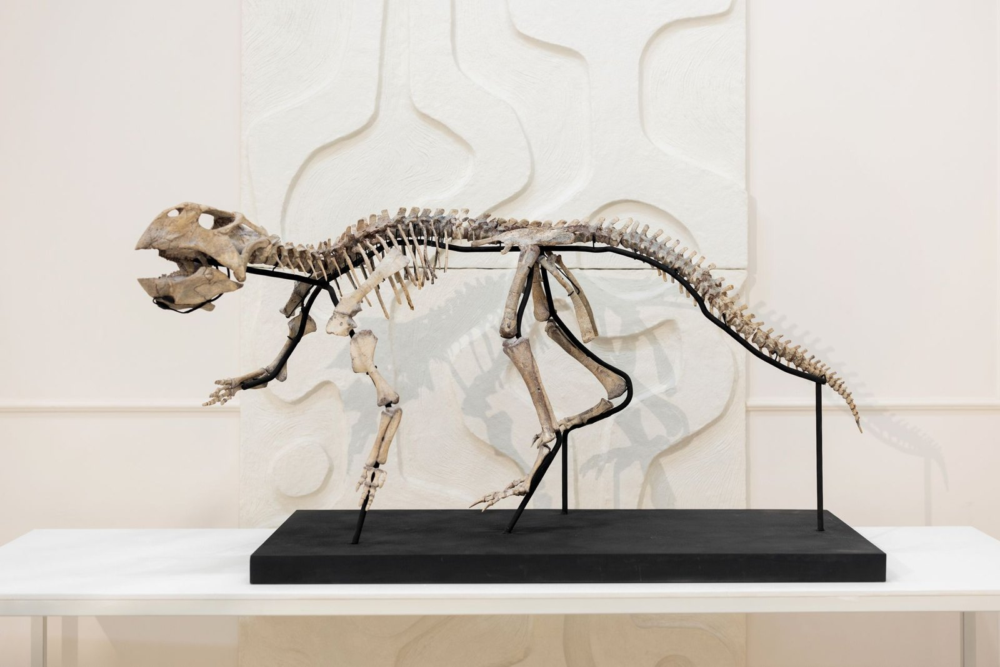
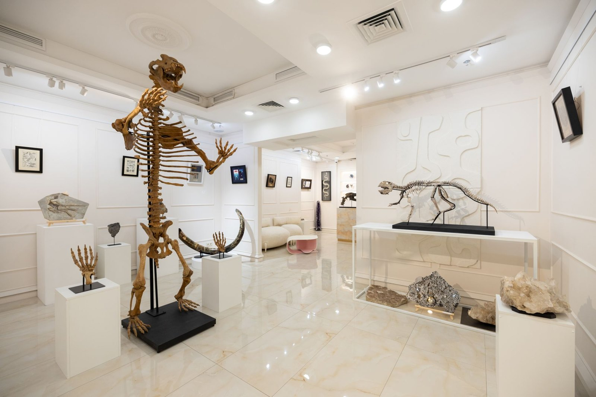
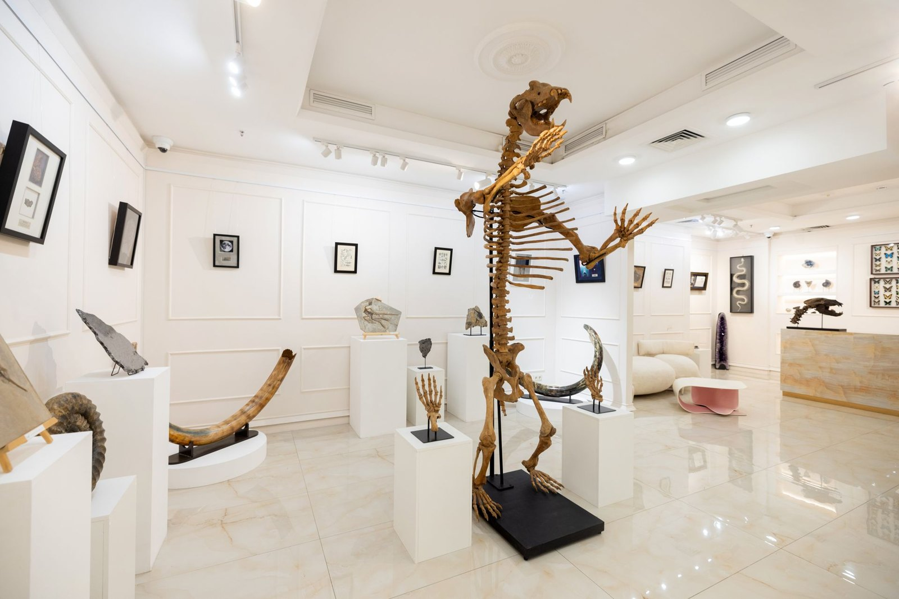
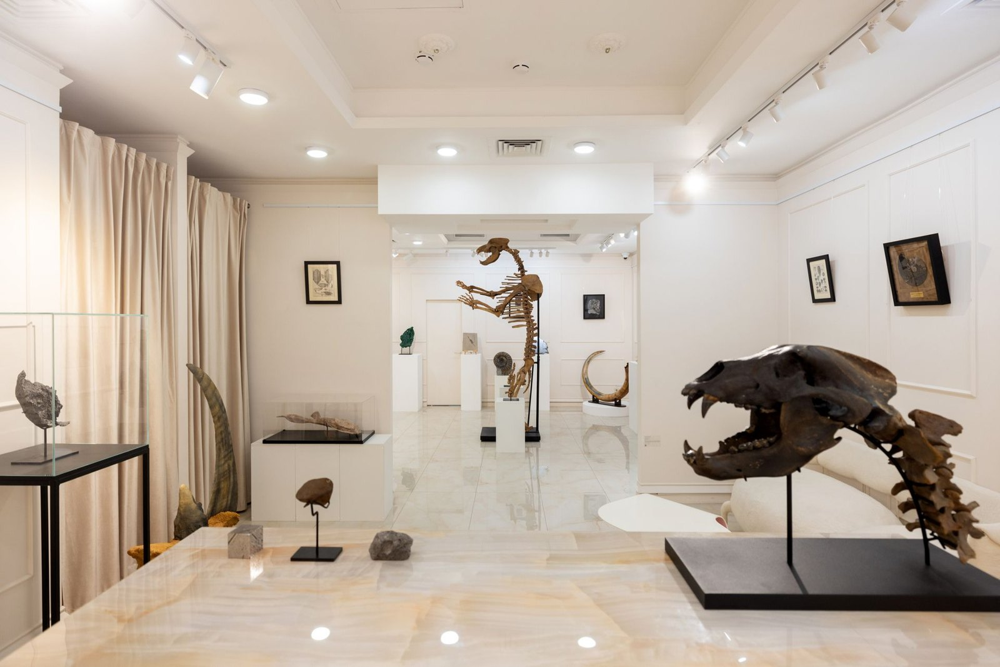
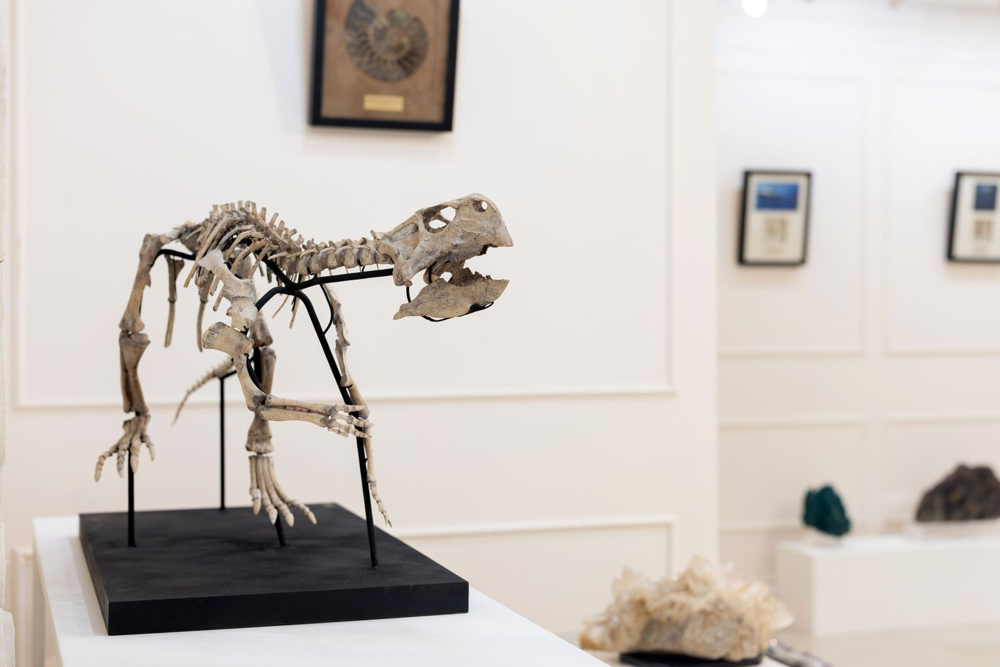
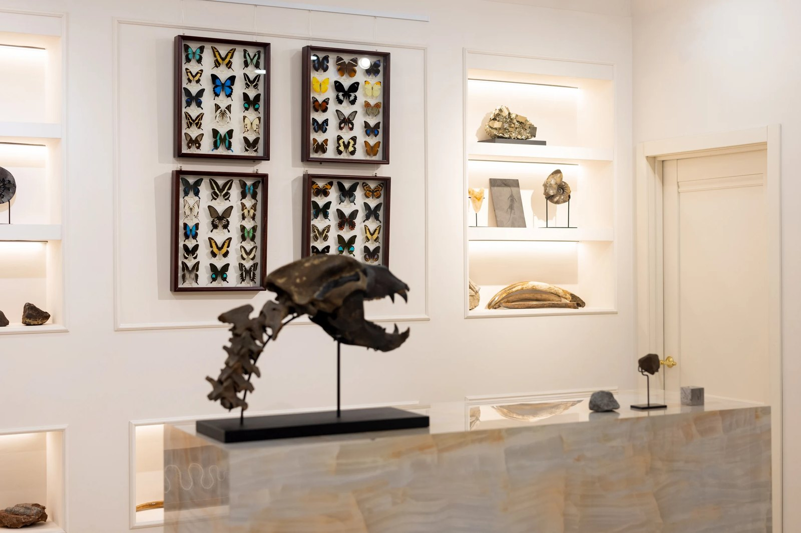
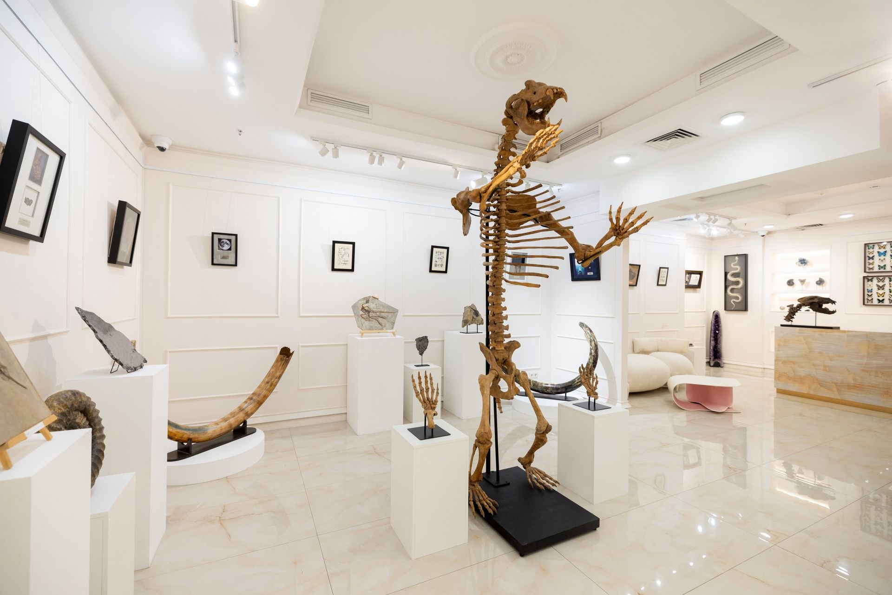

Что пишут о Relictum федеральные и городские издания. Первая в России выставка-продажа скелетов динозавров, метеоритов и минералов открылась на Большой Якиманке в августе 2026 года.

В экспозиции «Реликтум: следы времени» — полный скелет пситтакозавра возрастом 130 млн лет, скелет пещерного медведя, парные бивни мамонта из якутской мерзлоты и метеориты, которые старше Земли.

В Москве представили выставку «Реликтум: следы времени», где можно приобрести скелеты динозавров, черепа доисторических животных и метеориты.

Дом Relictum и галерея Stargift представляют новый для России формат, знакомый по международным аукционам, — выставку-продажу редких природных объектов, история которых насчитывает миллионы лет.

В Москве динозавров теперь не только показывают, но и предлагают купить — вместе с черепами доисторических животных, бивнями мамонтов, метеоритами и другими природными артефактами, которым миллионы лет.

В столице появилась выставка «Реликтум: следы времени» со скелетами динозавров, черепами доисторических животных и окаменелостями — первое мероприятие такого формата в городе.

Среди лотов — полные скелеты, черепа и бивни доисторических животных, окаменелости первобытных организмов, метеориты и редкие минералы.

Съёмка в галерее, интервью с основателями дома, фотографии экспонатов в высоком разрешении и комментарии по палеонтологии и метеоритике — по запросу.